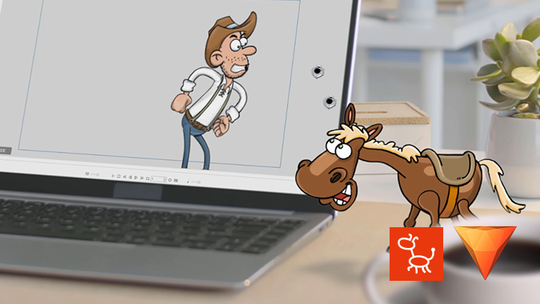
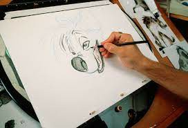
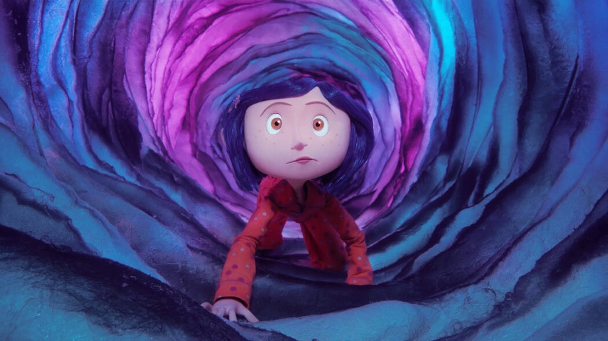
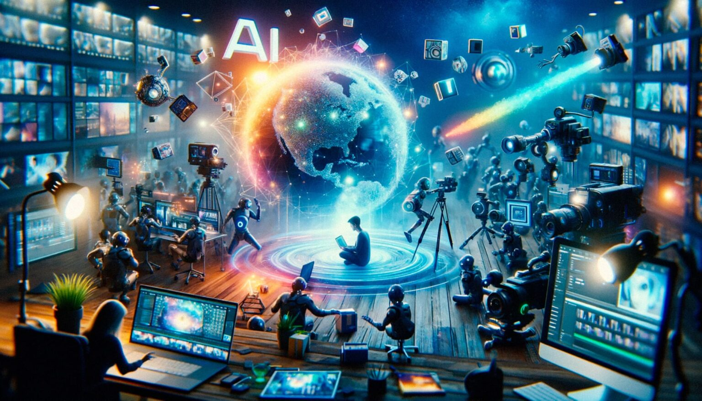
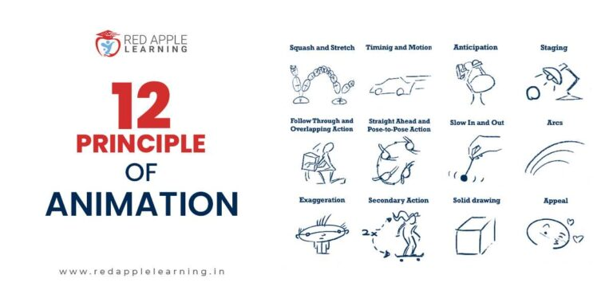

#1. The Art of Animation: A Deep Dive
Animation, a visual medium that brings life to characters and stories, has captivated audiences for centuries. From early forms of stop-motion to cutting-edge computer-generated imagery (CGI), animation has evolved into a complex and sophisticated art form. .

This exploration will delve into the various techniques, principles, and influential figures that have shaped the world of animation.
#2. Traditional Animation: The Handcrafted Art
Traditional animation, or cel animation, is a time-consuming but rewarding process that involves drawing each frame of a sequence by hand. Artists carefully trace each drawing onto transparent sheets called cels, which are then placed over backgrounds and photographed. This meticulous approach results in fluid movements and intricate details.
#3. Stop-Motion Animation: A Frame-by-Frame Marvel
Stop-motion animation is a technique that involves moving objects slightly between each shot and then photographing them. When played in sequence, these photographs create the illusion of movement. This method is often used to animate puppets, clay figures, or even everyday objects.
A classic example of stop-motion animation is "Wallace and Gromit," a British claymation series that has garnered international acclaim. The series' quirky humor, charming characters, and inventive storytelling have made it a beloved favorite among audiences of all ages.
#4. Computer Animation: The Digital Revolution
The advent of computer technology has revolutionized the animation industry, giving rise to computer-generated imagery (CGI). CGI allows animators to create highly realistic and complex visuals that were once impossible to achieve with traditional methods.
Pixar Animation Studios is a pioneer in CGI animation, producing groundbreaking films such as "Toy Story," "Finding Nemo," and "Up." These films have not only entertained audiences but have also pushed the boundaries of what is possible in animation.
#5. Key Principles of Animation
Effective animation relies on a set of fundamental principles that guide the movement and behavior of characters. These principles, developed by Disney animators, include:
- Squash and stretch: Exaggerating the deformation of objects to emphasize action and emotion.
- Anticipation: Preparing the audience for an action by showing a subtle movement beforehand.
- Staging: Arranging elements within a scene to clearly convey the story and focus the viewer's attention.
- Straight ahead action and pose-to-pose: Two approaches to animating movement, either by drawing frame by frame or by planning key poses and filling in the gaps.
- Follow-through and overlapping action: Adding secondary movements to enhance the realism and fluidity of animation.
- Slow in, fast out: Gradually accelerating and decelerating movements for a more natural look.
- Exaggeration: Emphasizing key features or actions to make them more expressive and memorable.
- Timing: Controlling the speed and rhythm of movements to convey emotion and create a sense of pacing.
- Solid drawing: Ensuring that characters and objects are drawn accurately and convincingly.
- Appeal: Creating characters that are visually pleasing and emotionally engaging.
#6. The Future of Animation

As technology continues to advance, the possibilities for animation are endless. Virtual reality, augmented reality, and artificial intelligence are all poised to revolutionize the way we experience and create animated content.
From traditional hand-drawn animation to cutting-edge CGI, the art of animation continues to evolve and captivate audiences around the world. As animators push the boundaries of creativity and technology, we can expect to see even more stunning and innovative animated works in the years to come.
Conclusion About Animation
Why Is Animation So Powerful? Visual storytelling is at the heart of animation’s appeal. As humans, we’re wired to absorb visual information—over 90% of what we take in is visual. When animators add sound and music to their creations, they create multisensory experiences that captivate us, whether we’re kids or adults2. In conclusion, animation remains a beloved art form that continues to evolve. From simple cartoons to mind-bending CGI, it never fails to spark our imagination and transport us to magical realms.